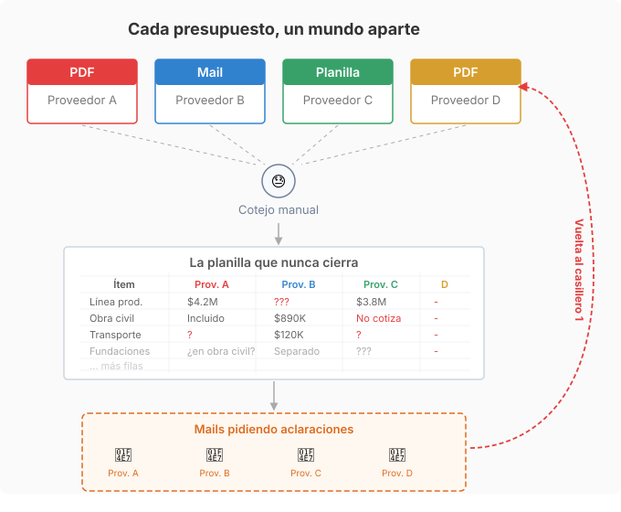
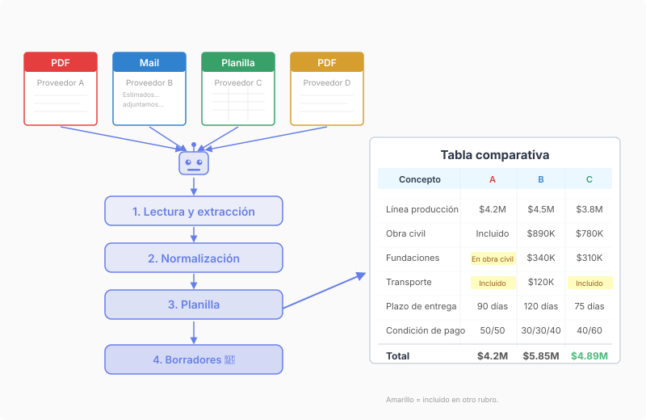

El problema
Un equipo de ingeniería recibe cinco presupuestos por contratación. Bueno, tres; dos son PDFs con información de marketing genérico de la empresa. Cada proveedor manda su propuesta en su formato particular: uno en PDF, otro por mail, otro en una planilla Excel, otro en Word. Los ítems no coinciden exactamente, las unidades varían, y lo que un proveedor desglosa en diez líneas otro lo agrupa en tres.
Un ingeniero inicia una nueva planilla para esta contratación y empieza a extraer la información y ordenarla. La primera columna son los ítems del proveedor A. Cuando pasa al proveedor B, encuentra algunos ítems faltantes y otros que no encajan en las filas definidas por A, descripciones que parecen iguales pero no lo son, condiciones que aparecen en un pie de página y no en una celda. La planilla crece con cada proveedor, y cada dato agregado genera preguntas a presupuestos anteriores.
Se envían mails con consultas generadas, se espera respuestas en pocos días (o se les recuerda que por favor respondan), se ajusta la planilla, y se repite. En un caso reciente este ciclo se repitió cuatro veces hasta llegar a tener suficiente información para decidir. Cada ronda insumió tiempo y esfuerzo de trabajo calificado.
Nuestra solución
Armamos un agente cotejador que recibe los documentos de cada proveedor, entiende todos los formatos usuales, y los procesa de la siguiente manera:
- Extrae información de los archivos. Identifica ítems cotizados, cantidades, precios unitarios, totales, y condiciones. Cuando no está seguro de que dos ítems con nombres distintos corresponden al mismo concepto, pregunta al ingeniero.
- Normaliza datos. Arma una estructura común donde cada ítem tiene similar granularidad. Si un proveedor agrupa lo que otro desglosa, el asistente lo señala en vez de forzar una falsa equivalencia. Si uno incluye transporte y otro no, marca la diferencia.
- Genera una planilla de comparación. Cada fila es un concepto y cada columna un proveedor, con diferencias y faltantes resaltados. No solo diferencias de precio: también diferencias de alcance, de plazos, de condiciones que afectan el costo real. En otra hoja compara condiciones de entrega (financiaciones, garantías, plazos de entrega, etc.).
- Escribe borradores de seguimiento para cada proveedor. Redacta mails con preguntas sugeridas, y marca una fecha esperada de respuesta (3 días hábiles para este equipo).
El resultado es una planilla bien diseñada que alguien hubiera armado después de dos horas de trabajo, generada en pocos minutos. A medida que llegan nuevas respuestas, el agente modifica o agrega datos ordenadamente, facilitando el seguimiento.

El ahorro de tiempo es visible. La disminución de esfuerzo no queda tan a la vista: las preguntas que el equipo hace después son más completas y tienen seguimiento del agente. Si se envían varias preguntas a Proveedor A, otras a B, y más a C, el agente las recuerda (aunque parezcan de baja prioridad a un humano negociando las partes más significativas en los primeros intercambios).
Dónde aplica el mismo patrón
Este problema, recibir información equivalente en formatos distintos y tener que compararla, aparece en muchos contextos:
- Cobertura médica. Una empresa evalúa tres planes de salud para su personal. Cada prepaga presenta su propuesta con distinta estructura: una desglosa por tipo de prestación, otra por grupo familiar, otra agrupa todo en un valor per cápita. Normalizando las propuestas, el área de recursos humanos compara costos reales por el mismo nivel de cobertura.
- Propuestas legales. Un directorio recibe ofertas de tres estudios jurídicos para llevar un caso. Cada uno presupuesta distinto: uno cobra por hora, otro un fijo mensual, otro un mix con éxito. Armar el comparativo sobre una base común permite evaluar el costo total estimado bajo distintos escenarios de duración.
- Eventos corporativos. Se piden tres cotizaciones para un evento de fin de año. Un proveedor incluye sonido en el precio del salón, otro lo cobra aparte, otro ofrece un paquete que incluye catering pero no decoración. La tabla normalizada muestra el costo real de cada opción completa.
- Compras de insumos. Una fábrica cotiza materia prima con cinco proveedores. Los precios varían, pero también los mínimos de compra, los plazos de entrega, y las condiciones de pago. La comparación que importa no es solo el precio por kilo, sino el costo total puesto en planta en el plazo que se necesita.
- Licitaciones públicas. Un organismo evalúa ofertas en un proceso de compra. Cada oferente presenta su documentación con distinto orden y nivel de detalle. Normalizar las ofertas contra el pliego permite verificar cumplimiento y comparar en menos tiempo, con menos riesgo de pasar algo por alto.